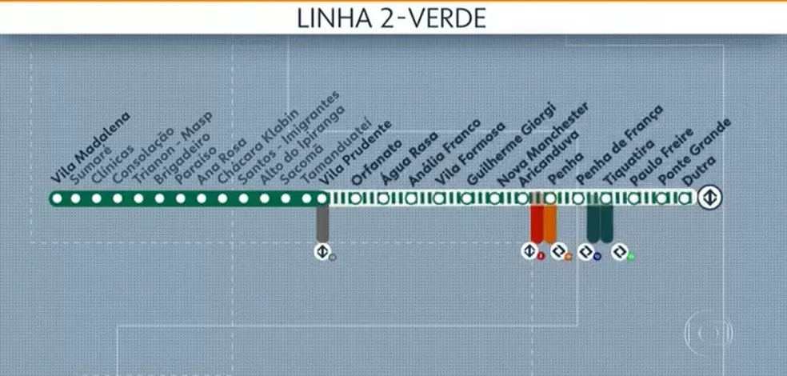

O Metrô de São Paulo pretende lançar uma licitação para a contratação de 44 trens para a Linha 2-Verde que serão totalmente automáticos, sem maquinistas, e com entradas USB. As novas unidades poderão ser usadas ainda para reforçar o serviço nas linhas 1- Azul e 3- Vermelha.
As informações foram apresentadas em uma audiência pública prévia à publicação da licitação na última quinta-feira (17) realizada no pátio da empresa localizada no Jabaquara, na Zona Sul de São Paulo.
